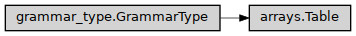

Table
- class ase2sprkkr.common.grammar_types.arrays.Table(columns=None, header=None, free_header=False, format={<class 'float'>: '>22.14', None: '>16'}, format_all=True, numbering=None, numbering_label=None, numbering_format=True, prefix=None, postfix=None, length=None, row_condition=None, flatten=False, default_values=False, named_result=False, **kwargs)[source]
Table, optionaly with named columns, e.g.
::text
- IQ IREFQ IMQ NOQ ITOQ CONC
1 1 1 1 1 1.000 2 2 2 1 2 1.000
Class hierarchy
Constructor
- __init__(columns=None, header=None, free_header=False, format={<class 'float'>: '>22.14', None: '>16'}, format_all=True, numbering=None, numbering_label=None, numbering_format=True, prefix=None, postfix=None, length=None, row_condition=None, flatten=False, default_values=False, named_result=False, **kwargs)[source]
Create the object.
- Parameters:
prefix – The string, that will be printed before the value
postfix – The string, that will be printed after the value
format – The (python) format string, that will be used for outputing the value. The format is passed as format argument to
str.formatroutine.after_format – In some cases, the additional formating is required after converting to the string and adding postfix/prefix.
default_value – The default value of the options of this type.
Nonemeans no default value.condition – Function, that check the validity of the value. It should return
Truefor a valid value, andFalseor string for invalid. The string is interpreted as an error message that explains the invalidity of the value.after_convert – Function, that - if it is given - is applied to the (entered or parsed) value. The function is applied on the result of the
convertmethod
- array_access = True
The value of this type can be accessed as array
- name_in_grammar = False
Default value for ValueDefinition.name_in_grammar. Some types (e.g. Tables) commonly have no name (are identified by its position in the potential file) – such type could redefine this class property.
- _string(data)[source]
Convert the value to the ouput.
The
string()apply format and do some additional transformation (add prefix, postfix etc.), so the actual way how to convert the value for the output should be here.
- property numpy_type
The base class of the class hierarchy.
When called, it accepts no arguments and returns a new featureless instance that has no instance attributes and cannot be given any.
- zero_data(length)[source]
Return array of zeros with the given number of rows and with the dtype of the table
- grammar_name()[source]
Human readable expression of the grammar. By default, this is what is set by grammar.setName, however, sometimes is desirable to set even shorter string
- static is_the_same_value(a, b)
The numpy arrays cannot be compared by =, that’s why this method. However, the method is still far from to be perfect, it can not compare nested numpy arrays.